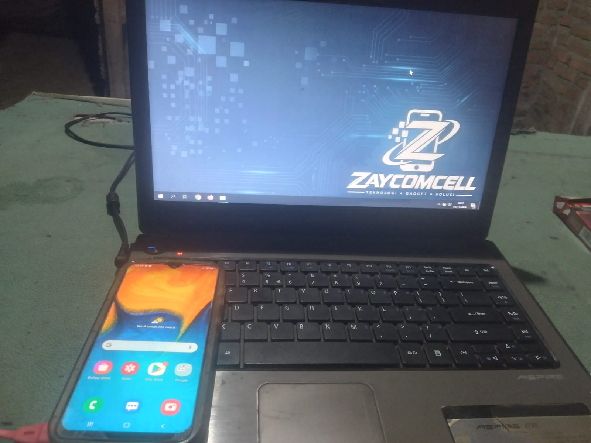

Pernah mendapatkan pelanggan yang datang membawa HP Samsung karena lupa sandi layar? Kali ini saya ingin berbagi pengalaman servis Samsung A20 yang datang ke konter dengan kondisi terkunci.
Kasus ini cukup menarik karena setelah dilakukan factory reset, ternyata perangkat masih meminta akun Google yang sebelumnya digunakan.
Samsung A20 Lupa Sandi Layar
Awalnya seorang HRD datang ke konter saya dan menjelaskan bahwa Samsung A20 milik anaknya lupa sandi layar. HP tersebut tidak bisa digunakan karena terkunci.
Setelah mendapatkan izin dari pemilik perangkat, saya mencoba melakukan factory reset melalui menu recovery dengan bantuan kabel data yang terhubung ke laptop.
Proses reset berhasil. Namun, setelah perangkat dinyalakan kembali, muncul masalah berikutnya.
Setelah Factory Reset, Samsung Meminta Akun Google
Samsung A20 masuk ke halaman setup awal dan meminta login menggunakan akun Google yang sebelumnya tersimpan di perangkat.
Saya kemudian mengonfirmasi kepada pelanggan. Beliau mengatakan masih mengingat email yang digunakan, lalu mencoba login menggunakan akun tersebut.
Sayangnya, proses verifikasi tetap gagal. Perangkat belum bisa digunakan seperti biasa karena perlindungan Factory Reset Protection atau FRP masih aktif.
Mencoba Menangani FRP Menggunakan Unlock Tool
Setelah mendapatkan persetujuan pelanggan, saya membuka Unlock Tool yang biasa digunakan untuk pekerjaan servis perangkat Android.
Pada bagian Samsung, saya mencoba mencari model A20. Ternyata pilihan A20 tidak muncul di kotak pencarian.
Dalam kasus ini saya memilih opsi A20s yang tersedia pada tool tersebut. Perlu diingat, pilihan model ini merupakan pengalaman pada perangkat yang saya tangani, bukan jaminan kompatibilitas untuk semua Samsung A20.
Saya menghubungkan perangkat ke laptop, kemudian menjalankan proses melalui Unlock Tool. Proses berlangsung sampai perangkat berhasil masuk ke halaman Home.
Setelah pengerjaan selesai, Samsung A20 kembali dapat digunakan seperti perangkat yang baru selesai menjalani setup awal.
Hasil Akhir Servis Samsung A20

Dari kasus ini, kita bisa melihat bahwa factory reset tidak selalu menyelesaikan masalah HP yang terkunci. Perlindungan FRP tetap dapat meminta verifikasi akun Google sebelumnya.
Apa Itu FRP pada Samsung?
Factory Reset Protection atau FRP merupakan fitur keamanan Android yang membantu melindungi perangkat dari penggunaan tidak sah setelah dilakukan reset.
Karena itu, jika HP meminta akun Google setelah factory reset, pemilik sebaiknya mencoba memulihkan akun melalui layanan resmi Google terlebih dahulu.
Untuk pekerjaan servis, teknisi perlu memastikan kepemilikan perangkat dan mendapatkan persetujuan pelanggan sebelum melakukan tindakan pemulihan.
Kesimpulan Pengalaman Servis
Samsung A20 yang datang ke konter dalam kondisi lupa sandi layar ternyata menghadapi masalah lanjutan setelah factory reset, yaitu verifikasi FRP.
Pada kasus ini, pengerjaan menggunakan Unlock Tool berhasil membawa perangkat kembali ke Home Screen. Pengalaman seperti ini menjadi salah satu bagian menarik dari pekerjaan teknisi HP sehari-hari.
Setiap perangkat memiliki kondisi dan kompatibilitas yang berbeda. Karena itu, hasil pengerjaan tidak selalu sama pada setiap model atau versi software.